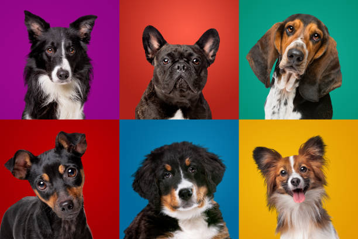

Blog CarePet: Qual raça de cachorro escolher
Escolher a raça de cachorro ideal é uma decisão que envolve mais do que apenas preferências estéticas. O cão certo para você depende de vários fatores, como seu estilo de vida, o espaço disponível, e até mesmo a sua personalidade. Este guia ajudará você a considerar os aspectos mais importantes para tomar uma decisão informada e garantir que seu novo amigo de quatro patas seja o companheiro perfeito.
Tamanho: Espaço e Comodidade
O tamanho do cachorro é um dos primeiros fatores a considerar. Cães maiores, como o Labrador Retriever, o Golden Retriever, ou o Pastor Alemão, tendem a exigir mais espaço e podem não se adaptar bem a ambientes pequenos. Eles precisam de áreas amplas para se exercitar, correr e brincar. Se você mora em uma casa com um grande quintal ou gosta de atividades ao ar livre, essas raças podem ser ideais.Por outro lado, raças menores, como o Chihuahua, o Pug ou o Dachshund, são mais adequadas para apartamentos ou casas com espaços limitados. Eles podem obter toda a atividade de que precisam em caminhadas diárias e brincadeiras dentro de casa. No entanto, mesmo raças pequenas podem ter grandes personalidades e exigências, então tamanho não é o único critério a considerar.
Nível de Atividade: Compatibilidade com seu Estilo de Vida
Seu nível de atividade diária é um indicador crucial para a escolha da raça. Cães altamente energéticos, como o Border Collie, o Australian Shepherd, ou o Husky Siberiano, prosperam em ambientes onde possam liberar sua energia. Eles precisam de exercícios diários intensos e de um ambiente estimulante. Esses cães são perfeitos para pessoas que gostam de caminhar, correr, fazer trilhas ou praticar esportes.Se você prefere um estilo de vida mais tranquilo, considere raças com níveis de energia mais baixos, como o Basset Hound, o Bulldog Inglês ou o Shih Tzu. Esses cães estão felizes com caminhadas curtas e um tempo aconchegante no sofá. No entanto, lembre-se de que todos os cães precisam de algum exercício e estimulação mental para se manterem saudáveis e felizes.
Temperamento: Encontre um Amigo que Combine com Você
O temperamento de um cão é fundamental para garantir que ele se ajuste bem à sua casa e à sua vida. Raças como o Golden Retriever e o Labrador Retriever são conhecidas por sua natureza amigável, leal e extrovertida, o que as torna excelentes para famílias e lares com crianças. Esses cães adoram estar ao redor das pessoas e participam ativamente das atividades familiares. Por outro lado, raças como o Shiba Inu ou o Akita são mais independentes e podem ser reservadas com estranhos. Elas podem se adaptar bem a donos que valorizam a independência e que têm experiência em treinar e socializar cães. Raças como o Cocker Spaniel e o Poodle são conhecidas por serem afetuosas e por desenvolverem fortes laços com seus donos, sendo perfeitas para quem busca um companheiro constante e carinhoso.